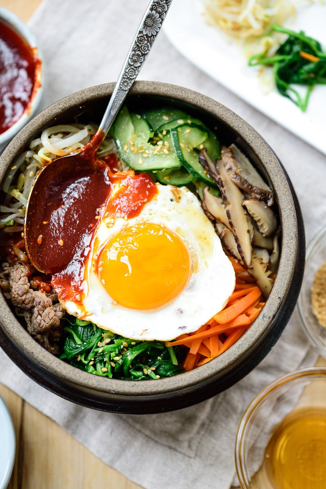

Korean Bibimbap

Bibimbap is a large bowl of rice topped with an array of individually
prepared vegetables and meat and served with a gochujang sauce. Bibim
means mixing, and bap means rice. The mixing usually happens at the table by
the diner.
In Korea, there are many different types of bibimbap depending on toppings,
regions, sauces, etc. Sannamul (wild vegetables) bibimbap, jeyuk (spicy pork)
bibimbap, haemul (seafood) bibimbap, and yeolmu (young radish greens) bibimbap
are a few examples.
Ingredients
Rice
Meat
- 8 ounces thinly sliced tender beef (rib eye, sirloin, etc. or ground beef)
- 1.5 tablespoons soy sauce
- 2 teaspoons sugar
- 2 teaspoons sesame oil
- 2 teaspoons rice wine
- 1 teaspoon minced garlic
- 1 tablespoon chopped scallion
- pepper to taste
Vegetables and Eggs
- 8 ounces mung bean sprouts
- 1 bunch spinach, about 8 ounces
- 2 small cucumbers, about 5 ounces
- 4 ounces mushrooms (shiitake, white, cremini, etc.)
- 2 medium carrots, about 5 ounces
- 1.5 teaspoons minced garlic
- 3 tablespoons chopped scallion
- sesame oil
- sesame seeds
- salt
- 4 eggs
- cooking oil
Sauce
- 4 tablespoons gochujang
- 2 teaspoons sugar - adjust to taste
- 1 tablespoon sesame oi
- 1 tablespoon water
Steps
Rice
-
Cook the rice, without soaking and using a little less water
than the amount you normally use. The rice for bibimbap should
be a little drier than usual for best results.
Meat
-
Cut beef into thin 2-inch long strips. Mix in 1.5 tablespoons of
soy sauce, 2 teaspoons of sugar, 2 teaspoons of sesame oil, 2 teaspoons
of rice wine, 1 tablespoon of chopped scallion, 1 teaspoon minced
garlic, 1/2 sesame seeds and a pinch of pepper. Marinate for 20 minutes.
Sauté in a skillet for 2-3 minutes over high heat.
Vgetables
-
Bring 2 cups of water to a boil. Add the bean sprouts and briefly blanch,
about 1 minute, flipping over once. Drain quickly and shock in cold water
to stop cooking. Drain again. Toss with 1/2 teaspoon of minced garlic, 1 teaspoon
of sesame oil, 1/2 teaspoon of sesame seeds, and salt (about 1/2 teaspoon).
-
Blanch the spinach in salted boiling water only until wilted, about 40 seconds.
Drain quickly and shock in cold water. Squeeze out water. Cut into 3-inch lengths.
Toss with 1 tablespoon of chopped scallion, 1/2 teaspoon minced garlic, 1 teaspoon
of sesame oil, 1/2 teaspoon of sesame seeds and salt (about 1/2 teaspoon).
-
Cut the cucumbers in half lengthwise and then thinly slice crosswise. Generously sprinkle
salt (about 1/2 teaspoon) over sliced cucumbers and set aside for 10 - 15 minutes.
Squeeze out excess liquid. Toss with 1 tablespoon of chopped scallion, 1/2 teaspoon minced
garlic, 1 teaspoon sesame oil and 1/2 teaspoon of sesame seeds.
-
Thinly slice the mushrooms and carrots. Sauté each vegetable in a lightly oiled
skillet for 1 - 2 minutes over medium-high heat, sprinkling with salt (about 1/4 teaspoon).
Eggs
- Fry the eggs sunny side up or to your preference.
Sauce
- Combine all of the sauce ingredients in a small bowl and mix thoroughly.
Assembling
-
Place a serving of rice in a big bowl. Nicely arrange a small amount of each prepared vegetable
and beef over the rice. Drizzle a little sesame oil over. Top with an optional fried egg
and serve with the sauce.
-
For dolsot bibimbap: Lightly oil a stone or earthenware bowl with a teaspoon of sesame
oil over medium heat. Add a serving of cooked rice and arrange the toppings on top. Cook
for several minutes until the rice sizzles.